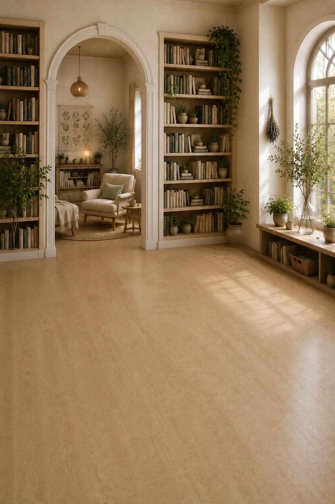
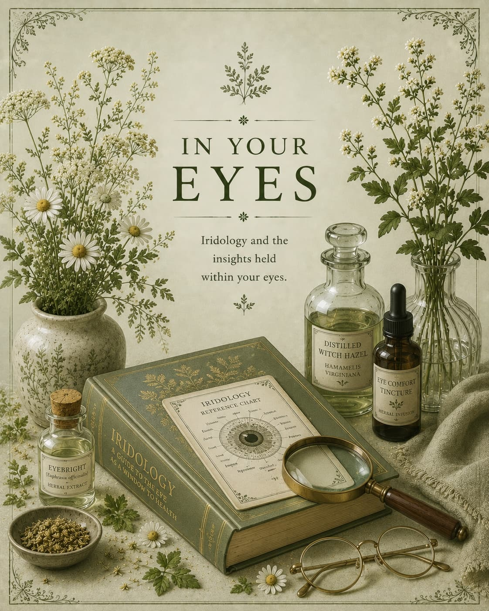

The greener shelves.
The gentler remedies.
Explore the timeless traditions of natural healing — herbs, oils, waters and the body's own wisdom. These remedies have tended to body and mind for generations. They are here for you.
